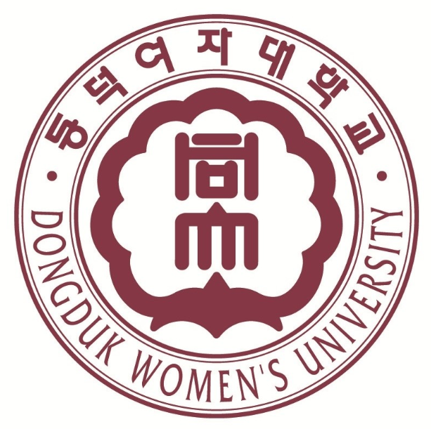

UNIVERSITY
DONGDUK WOMAN'S UNIVERSITY

Information Statistics
지식기반사회에서 발생하는 복잡하고 다양한 자료들을 체계적으로 구성, 요약, 정리, 분석하여 정보화, 지식화 하는 통계분석 전문가 및 정보시스템 전문가를 양성한다. 통계학 일반, 통계학 이론을 포함하여 조사방법론, 데이터마이닝, 정보시스템 일반, 데이터베이스, 데이터웨어하우스, 인터넷프로그래밍 등을 실습을 병행하여 교육한다.